振动原理和术语
振动原理
近几年来，车辆的设计和制造要求发生了巨大变化。
与以前相比，车辆的刚性更大，对来自路面的扰动具有更大的隔离作用。现在设计的车辆结构的刚性更强，许多在早期设计的车辆会发生的振动已不那么容易对现在的车辆造成影响，但是，如果在旋转部件和车身之间存在传递路径，即使是比较新型的车辆，也会检测到振动。
目前很多车上，对路面并没有足够多的隔振点。如果某个部件产生了足够强的振动，那么它有可能克服现有的隔振措施，而该部件就需要修理或更换。
是否存在扰人的噪声和振动直接影响到客户对车辆整体质量的感觉。
振动是物体前后或者上下往复运动。以下部件造成了大部分车辆振动：
- • 旋转部件
- • 发动机燃烧过程中的点火脉冲
旋转部件严重不平衡或存在跳动量时会引起振动。在振动诊断中，允许的不平衡量或跳动量应视为公差，而不是规格。换言之，不平衡量或跳动量越小越好。
当旋转部件没有与乘客舱正确隔振时，就会导致振动问题：如果电机支座破裂，发动机点火脉冲会被检测为振动。
振动部件在稳定的速率（km/h、mph 或 RPM）下工作。测量振动速率。速率/速度确定后，将振动与以相同速率/速度工作的部件相关联，以找到振动源。振动也有可能通过车身结构传递到其他部件。因此，不能仅仅因为座椅在振动，就认为振动源在座椅中。
振动由以下三个要素构成：
- • 振动源－振动的起因
- • 传递路径－振动通过车辆传递的路径
- • 响应部件－感觉到振动的部件
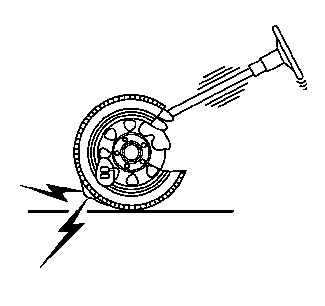
在上图中，振动源为失衡的轮胎。传递路径即振动通过车辆悬架系统进入转向柱的途径。响应部件为方向盘，客户报告方向盘有振动。消除三个要素中的任意一个要素，通常就能排除故障。利用收集到的信息，确定修理哪个要素最合理。给转向柱加一根撑杆可以防止方向盘振动，但添加撑杆的方法并不实用。最直接、最有效的修理方法就是正确地平衡轮胎。
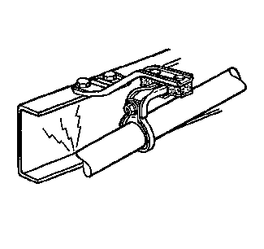
振动还会产生噪声。例如，假设有一辆车，其排气管固定在车架上。振动源是发动机点火脉冲，它通过排气系统传递。传递路径是固定的或弹跳的排气系统吊架。响应部件是车架。地板振动时，相当于一个大扬声器，会发出噪声。最佳的修理方法是消除传递路径。调整排气系统的位置，校正排气管在车架上的固定状况便可消除传递路径。
基本振动术语
以下为振动诊断的两个主要因素：
- • 物体的物理属性
- • 物体传递机械能的属性
大多数客户报修振动问题是由部件上下或前后往复运动引起的。以下为常见的振动部件：
- • 方向盘
- • 座垫
- • 车架
- • 仪表板
振动诊断包括以下要点：
- 1.测量往复运动，以每秒钟周期数或每分钟周期数为单位获得一个测量值。
- 2.将频率与以相同速率或转速工作的部件的旋转速度相关联。
- 3.检查并测试部件是否存在产生振动的状况。
例如，执行以下步骤将有助于说明振动原理：
-
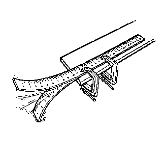1.将码尺夹在桌子边缘，并留出 50 cm (20 in) 伸出桌子边缘。
- 2.向下拉动码尺边缘并松开，同时观察码尺的运动。
码尺的运动为周期性运动。周期始于中点，继续运动到行程最低点，然后再返回中点，再运动到行程最高点，然后再返回中点，这时周期重新开始。
周期性运动以相同的速率或频率反复进行。在这种情况下，每秒钟约 10 个周期。如果我们测量频率，以反映码尺在一分钟内完成的周期数，那么测量值应为 10 周 x 60 秒 = 600 周/分钟 (cpm)。
在码尺从最高点到最低点的总行程中，我们还发现了一个特定的运动量，即振幅。按以下方法重新进行实验：
- 1.将码尺重新夹在桌子边缘，并留出 25 cm (10 in) 伸出桌子边缘。
- 2.向下拉动码尺边缘并松开，同时观察码尺的运动。
码尺的振动频率加快：每秒钟 30 个周期（每分钟 1800 个周期）。
周期
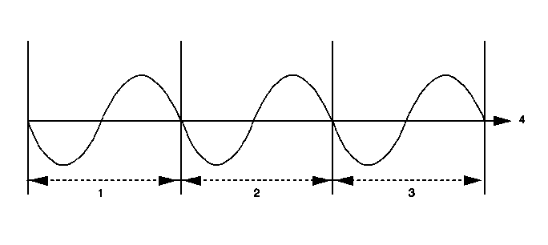
动力总成部件的振动周期
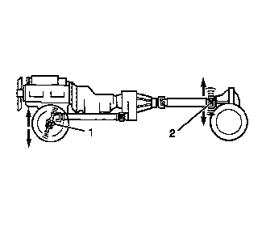

单词周期（cycle）与圆周（circle）源自相同的词根。圆周的开始和结束都在同一个点，与此类似，周期也是如此。所有的振动都由重复的周期组成。
频率
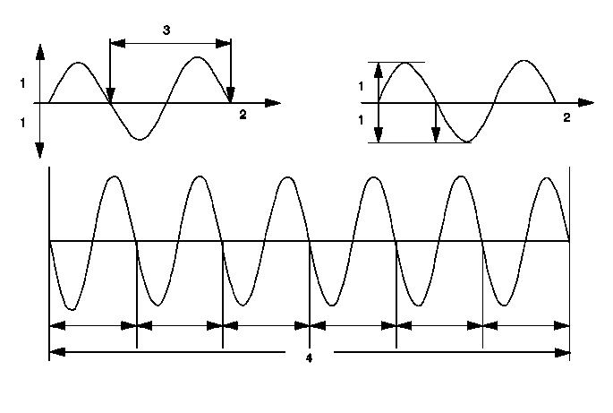
频率的定义为，在给定的时间内事件发生的速率。对于振动，事件就是周期，时间为 1 s。因此，频率可表示为每秒钟的周期数。
适合表述每秒钟周期数的术语为赫兹 (Hz)。这是测量频率最常用的方法。将 Hz 乘以 60，得出每分钟的周期数或转数 (RPM)。
振幅
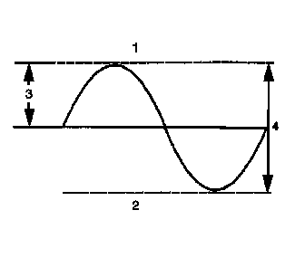
振幅是周期性变化量的最大值。在振动诊断中，通常把振幅作为扰动的幅值。严重扰动的振幅较大；轻微扰动的振幅较小。
振幅按实际运动量或位移量测量。例如，将失衡车轮在 80 km/h (50 mph) 和 40 km/h (25 mph) 车速下产生的振动进行对比。随着车速增加，振幅也增大。
自由振动
自由振动是指没有外力作用下的一种持续振动。在码尺例子中，即使在松开码尺端部后，码尺仍继续振动。
强迫振动
强迫振动是物体在外力作用下产生的连续振动。
因失衡产生的离心力
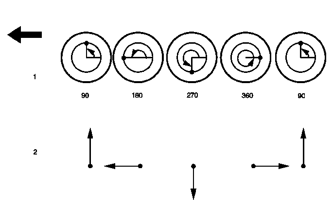
失衡的旋转体产生离心力。执行以下步骤，有助于说明离心力：
- 1.将螺母系在绳子上。
- 2.抓住绳子。螺母在重力作用下下垂。
- 3.转动绳子。螺母将沿圆周旋转。
离心力试图让螺母向外飞出，在手上可以感受到拉力。失衡的轮胎就属于这种情况。螺母就相当于轮胎中的不平衡量。绳子相当于轮胎、车轮和悬架总成。随着车速增加，可以通过方向盘、座椅和地板感觉到失衡轮胎产生的扰动力。该扰动是重复性的 (Hz)，其振幅会增大。速度越高，频率和振幅也越大。由于轮胎旋转，不平衡量或离心力将轮胎和芯轴交替上提和下压，轮胎每转一圈，这种情况重复一次。
固有频率或共振频率
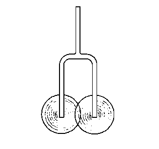
固有频率是一个物体趋向振动的频率。以钟、吉它弦和调音叉为例，当受到外力激励时，它们都趋向于以特定频率振动。
悬架系统，甚至支座内的发动机都有以一定的频率振动的趋势。这就是某些振动问题仅在特定的车速或发动机转速下出现的原因。
材料的刚度和固有频率有一定的关系。一般而言，材料刚度越大，固有频率越高。反之亦然。材料刚度越小，固有频率越低。相反，质量越大，固有频率越低。
共振
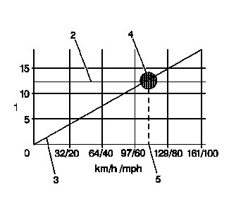
所有物体都有固有频率。典型的汽车前悬架的固有频率在 10-15 Hz 范围内。该固有频率是悬架的设计属性。悬架的固有频率在所有车速下都相同。当轮胎转速随着车速增加时，轮胎产生扰动的频率也增加。最终，失衡轮胎的频率与悬架的固有频率相交。从而导致悬架振动。该交叉点称为共振点。
振动幅度在共振点最大。尽管在高于和低于出现问题时的速度时都可能有振动感，但在共振点感到的振动最强烈。
阻尼
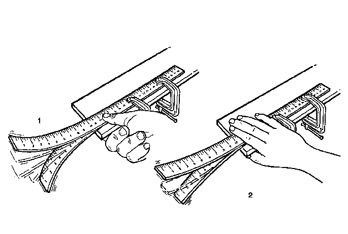
振动阻尼是物体或材料分散或吸收振动能量的能力。汽车的减振器就是一个很好的例子。减振器的功能就是吸收或衰减悬架系统的振荡。
差拍（相位干扰）
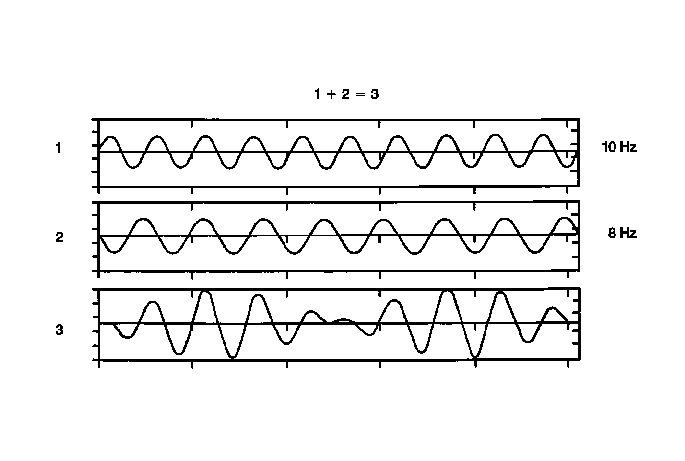
两个频率相近的独立扰动将导致一种称为差拍或相位干扰的状况。当车辆以稳定的速度行驶时，差拍振动的强度或振幅将以重复的形式增加。在一些车辆中能听到这种差拍振动产生的嗡嗡声。
当两个振动力的振幅叠加时，出现差拍现象。但是，两个振动力也会使振幅相互抵消。频率相近的振幅相互叠加和抵消称为差拍。在很多情况下，消除其中某一个扰动，便可校正这种状况。
阶次
阶次是指旋转部件每旋转1圈，事件出现的次数。
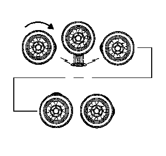
例如，带有1个高点的轮胎，每旋转一圈产生一次扰动。称为一阶振动。
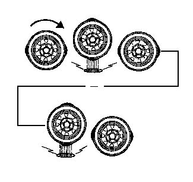
有两个高点的椭圆形轮胎，每转一圈产生两次扰动。称为二阶振动。三个高点为三阶，以此类推。两个一阶振动的振幅可能会使扰动总振幅增加，也可能使其削减，但仅此而已。两个一阶振动不等于一个二阶振动。在离心力的作用下，失衡的部件总是会产生至少一个一阶振动。